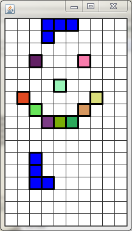
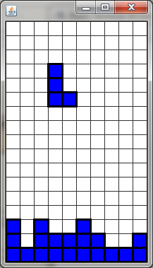

At the moment we've got a window that displays a TetrisGrid and a TetrisPiece together. Moving/rotating the piece can be accomplished using the arrow keys and spacebar. The issue now is that the piece blindly moves without checking first to see if the next locations are availiable to move the piece into.
Our Goals:
- Add the ability for the TetrisPiece to see if it fits in the grid
- Add the ability to find the next location/orientation of the Piece
- Use that ability to determine if it's safe to move or rotate
When the TetrisPiece is constructed it's given the TetrisGrid that it's matched up with. So far the TetrisPiece can move and rotate, but has no way of telling if it's current position is allowed by the rules of the game.
Add a method named fitsInGrid. The purpose of the fitsInGrid method is to look at each block, determine its location in the grid (found using the anchor) and use the grid to decide if that location is appropriate.
In order to return true, every Block's grid location must be:
1) A valid Location in the grid
2) An empty location in the grid. This means that the when you ask the
grid for the Block at that location, it returns a null value.
In order to test if this process works, modify the TetrisController's onKeyPress method so that the last thing it does it System.out.println the result of the TetrisPiece's fitsInGrid method.
Run the program again. This time every time you move, either a true or a false is printed to the terminal. Try several different situations and make sure that false is only printed when you are either out of the boundary of the grid (above is fine because of the upper buffer) or any of the four blocks are overlapping a Block from the grid.
In order to see if our next move or rotation is legal, we are going to obtain a copy of the TetrisPiece, tell it to move/rotate, and see if it fits in the grid at its new location/orientation. Add a method with the following header:
public TetrisPiece copy()
The purpose of this method is to return a NEW TetrisPiece that has nearly identical instance fields. First construct it using your grid, and then make sure that the size, anchor, and Block Locations are the same. Be careful when dealing with the Blocks: you want the new piece's Blocks to have the same Locations, but you do NOT want it to have the exact same blocks. Get the Locations out of the original Blocks and set the new Blocks to the same Locations.
Once you're confident that you've set up a good copy of the TetrisPiece, return it.
While the fitsInGrid method is nice to tell if the piece will fit, but the main thing that we care about is the future. We want to make sure that we can move in a specific direction.
Add a method with the following header:
public boolean canMoveInDir(int dir)
This method takes in an int that represents one of the four Location directions and returns true if moving in that direction would cause a situation where the piece would fit in the grid. The copy method that you just made will be perfect for this situation. The first thing that you should do is retrieve a copy of 'this' TetrisPiece, tell it to move in the direction, and ask if it still fits in the grid. This should tell you if you can move in that direction.
To test the canMoveInDir method you will modify the onKeyPress method of the TetrisController. Currently it blindly moves the piece in the direction indicated. Add an if statement so that it first checks if it can move in that direction before it actually calls the move method.
When you run it, you should find that the piece is now very limited in its motion. It should move freely until it hits a wall or Block that's in the grid. Also make sure that it's not moving two steps instead of one. That would indicate that you didn't revert the anchor location when you wrote canMoveInDir.
So far the canMoveInDir method is doing a pretty good job at keeping the TetrisPiece to orientations that are within the grid. You may have noticed that if you move to the edge of the screen and rotate your piece it can sometimes end up sticking a few of the Blocks outside of the grid. Similar to canMoveInDir, we need a way to see if rotation will cause an unhealthy situation.
Checking to see if you can rotate is very similar to checking to see if you can move. Obtain a copy, rotate it and observe the new orientation to see if it works.
Again test your program by setting up the controller to first ask if it canRotate before it actually rotates. Run the program and you should put the piece all the way up to the edge and attempt to rotate. It should do some rotating, but should stop when the next rotate will cause Blocks to be out of bounds.
So far we've been dealing with the movement of a single piece in the screen. In the real game of Tetris, when the piece cannot move down any more it becomes a part of the grid and a new piece is created.
Add a method named lockToGrid, which takes all of the Blocks and adds them to the grid at their grid location (don't forget to involve the anchor).
The piece should also be able to tell us if it's been locked or not. Add a boolean instance field that will represent if it's locked or not. First make sure that the constructor sets it to active from the start, and then add a method name isLocked() that will return the boolean. Finally, make sure that the lockToGrid method changes the boolean so that it's 'locked'.
The model already has a newPiece() method to load a new piece, but it's the Controller's job to tell it when to call it. Head back to the TetrisController's onKeyPress method. If the L button is pressed, the controller should tell the piece to lock itself to the grid and then have the model load a new piece. This is not how the game works, but we want it for testing purposes.
Run the program one more time. You should still be able to move yourself around and rotate. Move the piece to some place away from its starting location and then hit the L key. If all is well, the original piece will stay where it is and a new, movable piece will appear at the starting location. For now, it will be identical to the original.

At the moment the grid always starts with ten blocks on the grid. This was for testing, but now it's worn out its welcome. Go back to TetrisGrid's constructor and remove the call to quickLoadBlocks. If you run the game again you should start with a single piece that's controllable with the arrow keys. Hitting L should lock that peice and generate a new piece (of the same type, for now).
